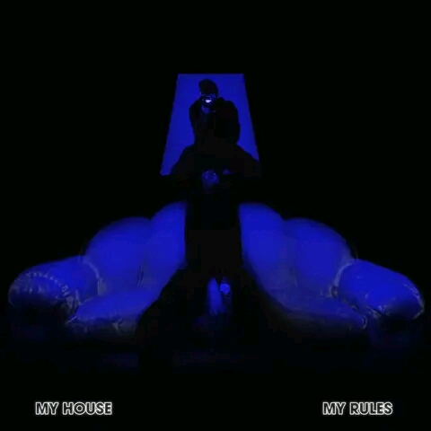

House Of Vigro Deep SA
Our Socials

956 Followers
|
2 Following
|
@Vigro deep Fans Page
Follow Us on Facebook For More Uodates About Vigro Deep Sa.
follow On Facebook
30 Followers
|
27 Following
|
Following Back
Vigrodeep_fans
Follow On tiktok